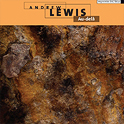
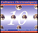

Date of composition: 1994, rev. 1997
Duration: 11:43
Format: acousmatic fixed medium (8ch)
Premiere: 4 December 2004, Birmingham, UK
BEAST, Midland Arts Centre, Birmingham, UK
Awards:
First Prize, Concours de Musique Electroacoustique, Bourges, France, 1997
Euphonie d'or, Concours de Musique Electroacoustique, Bourges, France, 2004
Recording (stereo): Andrew
Lewis 'Au-delà', audio CD, empreintes DIGITALes, IMED 13125,
2013


Available on CD 'Cultures Electroniques 10'Ascent
– for Lydia –
Although the piece began its life as essentially abstract in conception, work on Ascent took an unexpected turn as the music gradually acquired unmistakable resonances of the landscape of the Snowdonian setting in which it was composed. (Snowdonia is the imposing mountainous region of North Wales.) This process was initiated by the nature of the opening sounds of the piece, which were the first to be developed. Their powerful rising and falling contours are strongly suggestive of both the shape and the mass of mountainous forms, and the long time-base of their evolutions evokes something of the static expansivity of the view of mountains, sky and open sea which constantly dominates the Bangor studio.
An impressive aspect of mountainous landscapes is the way that their static, near-changeless forms can appear to be in constant and drastic metamorphosis as the position of the observer and the viewing conditions change. In Ascent this phenomenon finds musical parallels, with the same musical structures being constantly reviewed and re-explored. The effect is that of perceiving the same set of musical objects from different viewpoints, or in different lights: at first from a distance, as a panorama; then as if approaching and passing through a landscape rendered in sound. Beyond every turn of the musical discourse lies yet another view of the same familiar material, but perhaps framed by unfamiliar surroundings, or perceived in some new relationship with what has gone before.
As with the earlier Scherzo, Ascent moves freely across a spectrum of musical approaches, from the purely abstract to the more cinematic: at one extreme, the exploration of texture and of static pitch structures dominates; in the middle ground, evocations of irregular rock formations, undulating topography and large geological masses are prevalent; while at its most representational, important ideas are the elements, flight and the images that the name Eryri (the Welsh name for Snowdonia) might suggest. ('Eryr' = eagle).
Ascent was composed between February and November 1994 in the Electroacoustic Music Studios of the University of Wales Bangor. It was commissioned by BEAST for the rumours... series with financial support from West Midlands Arts. The piece was revised in 1997, and subsequently awarded a prize in the Studio Music category of the 24e Concours de Musique Electroacoustique, Bourges.